To make those cool skies in Unreal you have to learn to make a sky box. A sky box is merely a "room" where you make your sky/outdoor area and then a ZoneInfo that acts as a sort of camera and is displayed on ceilings/walls that you set to "fake backdrop." Think of the SkyZone area as the "Stage" and the walls you set to display it the monitor (kind of). So, there are basically 2 components need. A skybox, and a surface set to "display" it.
To start with load the GenEarth textures. Now make a room 512 x 512 x 512. Give the ground a nice ground texture and don't worry about the walls, yet. Add a PlayerStart to this room wherever you want. Secondly, make another room the same size off to the side, away from the room you just built. This room will be the SkyBox.

Inside this room make a box 256 x 256 x 128 "box" in the middle of the floor.
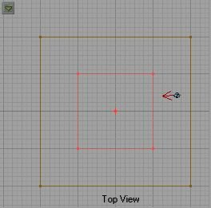 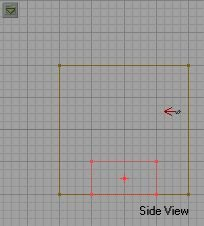Now load the SkyBox textures. In your skybox select any wall and press SHITF-B to select the whole brush. Change the texture to the cloudy one at the bottom. Now select the whole "box" we added to the middle of the room and change it's texture to the ground (GRD) texture. Your skybox should look like this now:
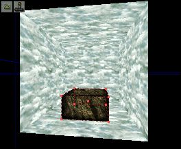If you look at the textures in the skybox package (the ones like LND1 LND2 etc...) you will notice they look like mountains but with a black background. These are masked walls that will be the sides of our sky box. First, make sure no textures are selected and then right click the sheet tool to bring up the sheet properties. Set the properties to X wall, U:256 V:128 like below:
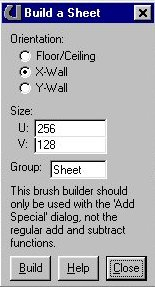Build the sheet then choose one of the LND textures (I used LND2_1) making sure no other surface is selected. Position the sheet like below:
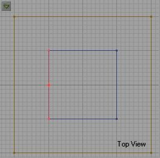 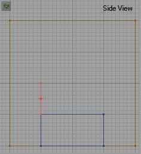Now, select the "Add Special" tool and open it's properties. Set the properties to Masked Wall and make sure Masked, 2-sided and Semi-Solid are selected. Click the Add Special button.
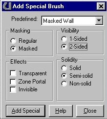Now rotate the sheet 90 degrees and move it to the next position clockwise. Select the next texture (LND2_1b).
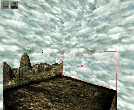Add special again, and then rotate the sheet again and choose the next texture and add. Keep doing this until you have all four "walls" added around the "box" we set in the center.
Now we need to add SkyZoneInfo to the box. In the Browser go to classes, info, zoneinfo and click on SkyZoneInfo. The zoneinfo will act as the camera so the "displayed" sky will be from the perspective of this zoneinfo as though it were the "camera." Place it as shown below:
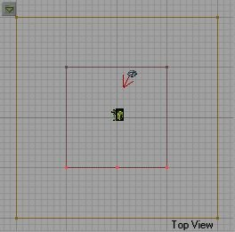 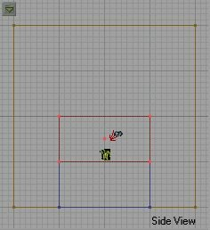Now we need to add a sheet brush the same size as the sky box, so select sheet properties and set the size to U:512 V:512 and select Floor. Place this sheet just above the masked walls we added in the center of the box:
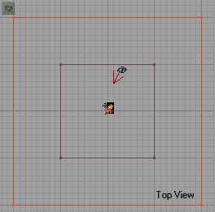 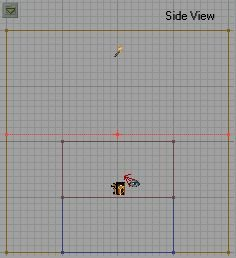Choose the cloud texture and add a masked wall. If you right-click the cloud sheet and select u-pan or v-pan effect, the clouds will move.
Now we need to add lights. This sky zone is small so we can just add one light, near the ground and keep the default settings.
Now, move back to our first room. Now we need to set the second component to make the skybox work. Select every surface EXCEPT the floor and right click to bring up texture properties. Choose Unlit and FakeBackdrop.
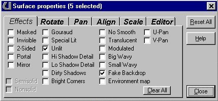Now add a light to this room, rebuild and test run the map. You just built your first skybox!
You might have noticed first off that there was a visible line between the cloud sheet and the walls of the sky box. you would fix this by making the skybox room and cloud sheet larger so that the cloud sheet stretches well past the SkyZone info and the edges are hidden behind the mountain walls in the sky box.
Also, the panning speed of the clouds is kind of fast. You can control this speed in the SkyBoxInfo under ZoneLight, by changing the TexUpanSpeed and TexVpanSpeed. The smaller the number the slower it pans. Try .5 or .3 for a good speed.
You can also set the ambient light of the SkyZone here. This won't affect the lighting in the "world" just how bright the sky and everything in the SkyZone appear.
You can also add other sheet brushes, with planets or moons on them. Just set them below the cloud sheet and make sure masked and transparent are set. Note: You can not have double transparencies (that is one transparent sheet over another in a sky box).
You can also set the light colors, but never give them dynamic properties or corona's (len's flares) as this will slow the map down considerably!

Play around with different things in the sky box (lighting, texture panning, etc...) and see what you can come up with. You should have the knowledge to build some really cool skies now.
Notes:In the Unreal Levels you will often notice two sky boxes. You can only have ONE sky box per level. They used two sky boxes in Unreal because they had one for hi-resolution and one for low-resolution.
Never use dynamic light effects in sky boxes. You can use non-solid sheets in the skybox instead of semi-solid sheets.
If I left anything out of this tutorial or if you aren't clear on something or just have questions about it, please e-mail me and I will answer your questions. Have fun!
-Wolf